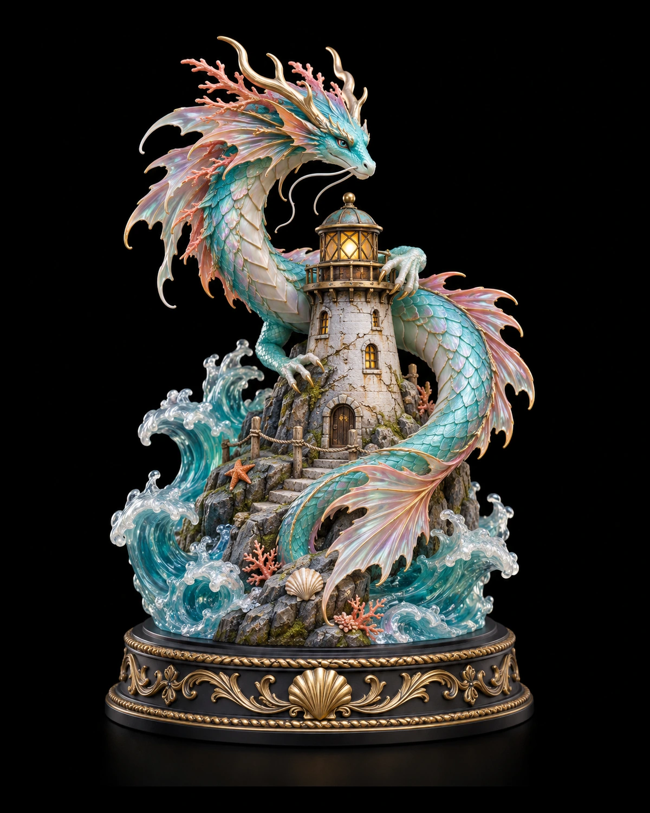

Resincollectie · volledig handgeschilderd
Oceaandraak
Een sierlijke zeedraak rond een vuurtoren, met golven en zorgvuldig geschilderde kleurovergangen. Een decoratief resinbeeld op een bijpassende dioramavoet, met de hand geschilderd en afgewerkt.
Handgeschilderd, in drie formaten
- Klein: circa 15 cm — € 44,95
- Middel: circa 20 cm — € 69,95
- Groot: circa 25 cm — € 99,95
- Resinbeeld inclusief bijpassende dioramavoet.
- Alleen volledig handgeschilderd en afgewerkt verkrijgbaar.
- Decoratief verzamelobject voor binnen; geen speelgoed.
Van voorbeeld naar jouw beeld
We bespreken de uitvoering op basis van dit ontwerpvoorbeeld voordat je bestelt. Elk beeld wordt afzonderlijk afgewerkt; kleine verschillen in kleur, penseelstreken en details horen daarbij.
Prijs, materiaaluitvoering, afmetingen en productietijd bevestigen we vooraf. Zet het beeld buiten direct zonlicht en warmte, behandel uitstekende details voorzichtig en stof het af met een zachte droge kwast.
Een vraag over dit beeld? Neem contact op →